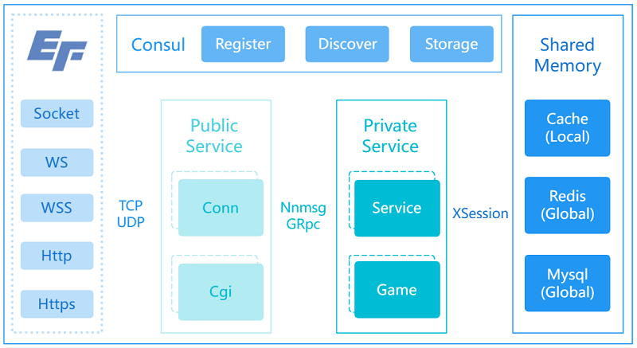

A LITE GO-BASED FRAMEWORK.
SUMMARY | 功能概述

- 分布式、高承载、无状态的微服务框架
- 前后端服务分离(private/public)
- 富前端连接，支持socket/ws/wss/http/https等
- 数据模型驱动，orm超集，支持条件表达式，快速开发
- 基于goroutine绑定的session会话结构，内存沙箱，安全稳定
- 动态负载均衡，基于UID均衡分配处理器，提高承载能力
MANUAL | 使用手册
Windows
- 安装Golang: go1.18.2.windows-amd64.msi
设置代理：go env -w GOPROXY=https://goproxy.cn,direct（重启或注销系统生效）
- VSCode安装Go插件：安装所有go工具（Go: Install/Update Tools）
- VSCode安装ecode-go插件：该插件提供工程的编译调试等功能
- 安装Navicat：navicat121_premium_cs_x64.exe（参考Navicat_Crack.txt进行绿化）
- 安装MySql：mysql-5.5.20-winx64.msi
- 安装Redis：Redis-x64-5.0.10.msi
- 安装Redis管理工具：Another-Redis-Desktop-Manager.1.3.9.exe
- 解压Consul：consul_1.8.3_windows_amd64.zip到对应的路径下，配置自启动
以管理员身份执行：sc.exe create Consul binPath="C:\Programs\Consul_1.8.3\consul.exe agent -dev -ui -client 0.0.0.0"
启动服务：sc.exe start Consul
运行services.msc，将Consul设置为自启动
UI控制台：http://127.0.0.1:8500/ui（使用Chrome访问）
Linux
- 解压安装Golang: go1.18.2.linux-amd64.tar.gz
设置代理：go env -w GOPROXY=https://goproxy.cn,direct
- VSCode安装Remote-SSH插件：该插件提供远端服务
- VSCode安装Go插件（远端）：安装所有go工具（Go: Install/Update Tools）
- VSCode安装ecode-go插件（远端）：该插件提供工程的编译调试等功能
- 参考Windows安装Mysql、Redis、Consul相应版本即可，具体步骤略
Project
- 安装依赖：go mod tidy
- 编译调试：ecode.go
- 创建图标：
安装gfie_setup_3.31.exe
以template.ico为模板生成即可
FAQ | 常见问题
TODO | 待办事项
REFER | 引用说明
LICENSE | 许可声明
CHANGELOG | 更新日志
v0.0.1 [2020.08.01 - 2023.06.10]
- 修复server.ini->env字段读取异常
- 修复Windows服务器无Golang环境无法初始化Mysql的问题
- 修复xconn网关异常（'close of closed channel'）
- 修复xsession注释错误
- 新增xsession.GCount获取数据数量
- 新增xorm.RxSMembers、xorm.RxSCard、xorm.RxLIndex等Redis接口
- 新增xorm.limit限制字段支持
- 新增conf.local支持
- 新增WebSocket(tls)的支持
- 新增xmsg.UnpackSID用于解析客户端的保留ID
- 新增xserver.SendCgi的uid参数，用于负载均衡
- 优化完善若干日志
- 优化所有包的注释
- 导出GetFPS和GetTitle接口
- 修改Consul健康检测的返回值（使用win32版本的title替代之）
- 修改配置文件在linux无法找到.
- 修改package(包)的名称.
- 修改msg和cgi的协议格式, 支持pb和json, 于server.ini中配置.
- 修改xmsg包为xproto.
- 更新protoc.exe.
- 重构protocol为protos, 区分cpb,mpb,rpb三种, 修改gproto.exe为gopb.exe工具.
- 完善cgi请求超时逻辑.
- 修改cgi默认协议为http.
- 修改CGI的访问方式.
- 修改CGIquery的格式.
- 重构Frame的类型
- 新增xhttp用于cgi接口
- 重构工程结构private/public
 1.9.7
1.9.7